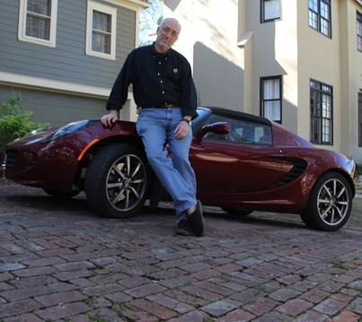

- Home |
- Blog |
- Lithography |
- Published Works |
- For Profit |
- About Chris
- | Gentleman
- | Scientist

Febraury 21, 2015, Austin, TX
What is the future of Extreme Ultraviolet Lithography (EUVL)? That innocent sounding question led leading industry lithographers Chris Mack and Vivek Bakshi to make their infamous 2009 bet about the future of EUVL. Will EUVL survive as a viable technology? Will it ever reach manufacturing readiness? With nothing less than Chris Mack’s 2005 Lotus Elise on the line, they recently settled up on that bet. But first, its murky history.
The Bet
The last week in February will find a very large percentage of the world’s lithographers at the same location: the annual SPIE Advanced Lithography Symposium in San Jose. For 10 or 12 hours each day for five days, attendees try to absorb details of the latest progress in semiconductor lithography, the technology that enables Moore’s Law and underpins the worldwide semiconductor industry. And in the evening, it is not uncommon to hear even more discussions about lithography at the Gordon Biersch Brewery a few blocks from the San Jose Convention Center. It was here in February 2009 that lithography guru and EUV skeptic Chris Mack found himself drinking beer and arguing with his friend and EUV lithography proponent Vivek Bakshi.
The exact genesis of the bet is fuzzy, as the details were never written down and there was, after all, much beer being consumed. Interviews with several witnesses, however, have allowed a rough approximation of events to be reconstructed. Mack began by claiming EUV lithography would soon be abandoned by the industry. With a price tag of US $100M per EUV tool and disappointing progress toward readiness, surely no company would place orders for these tools before seeing a demonstration of their capabilities. And tool vendor ASML could not hope to complete development of their EUV tools without billions of dollars more in investment. Mack predicted that EUVL would be dead by 2011.
“Hogwash,” replied Bakshi, possibly using a more colorful phrase. He claimed that not only would EUV survive past 2011, it would be in manufacturing by 2013, or 2014 at the latest. He then backed up this claim with “I’ll bet you a beer.”
“A beer?” Mack rejoined. “I’ll bet you my Lotus.”
 (Mack and his 2005 Lotus Elise)
And thus the bet was born. But what exactly was the bet? Mack claims it was simple enough: Will EUV be used in manufacturing by the end of 2014? Bakshi, however, remembers a two-part bet, with a second condition added: Will EUV die by 2011, as indicated by zero EUV abstracts submitted to the SPIE Advanced Lithography Symposium that year?
The terms of the bet are fuzzy as well. Mack put up his 2005 Lotus Elise, but Bakshi’s contribution remains vague.
The Results
At the end of 2014, the results of the both Mack’s and Bakshi’s predictions can be easily evaluated. EUV lithography is not dead, not by a long shot. ASML received orders for 11 production EUV lithography tools, cash up front, from most every major semiconductor manufacturer, giving ASML some of the cash needed to continue the tool’s development. While progress has been slower than desired, EUVL is inching closer and closer to manufacturing readiness. Strike one for Mack.
But EUV has still not been used in manufacturing. Every year the schedule slips by almost another year, with predictions of a manufacturing start now extending out to 2016 or 2017. The biggest problem is throughput, with EUV light sources too dim to enable the 100 wafers an hour or more that will be needed to make the technology economically practical. EUV was definitely not used for manufacturing in 2014. Strike one for Bakshi.
So in the end, they were both wrong. EUV is moving forward, but its ability to meet the future needs of semiconductor manufacturing remains in doubt. Six years later Mack and Bakshi still find themselves on opposite sides of the question of EUV’s future.
“EUV is alive today only because there is not good alternative, and the industry is not yet willing to give up hope on a scaling-driven continuation of Moore’s Law,” said Mack.
Not surprisingly, Bakshi is much more upbeat. “Due to the tremendous investments and progress made by the industry, I believe we will have EUVL in high volume manufacturing by 2016 – two years later than I originally thought,” he said.
The Resolution
So how have Mack and Bakshi resolved their bet? Both have admitted that some aspects of their predictions were wrong, but neither lithographer is willing to admit defeat. They have resolved their friendly wager by jointly donating $1000 to SPIE to be used for scholarships to send students to the SPIE annual lithography symposium.
“We are making decisions now about what technologies to pursue in advanced lithography,” said Mack, “but it is the young scientists and engineers in school today that will have to live with those decisions. I hope to retire before these next generation lithographies are ready.”
Chris Mack is a writer and gentleman scientist in Austin, Texas.
Other coverage of “The Bet” on the web:
http://spectrum.ieee.org/tech-talk/semiconductors/devices/i-believe-in-euvl-i-do-i-do
http://www.siliconinvestor.com/readmsg.aspx?msgid=26362562
http://www.lithoguru.com/scientist/conferences/spie_diary_2014.html
© Copyright 2015, Chris Mack.